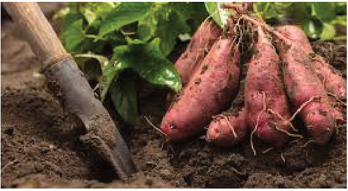
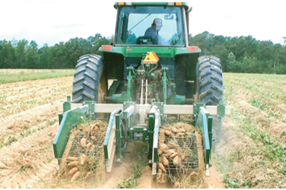

Agriculture for Secondary Schools
Harvesting
Potatoes can be harvested by hand or machine. The leaves of mature potatoes turn
yellow, typically around 90-120 days after planting. In small-scale production,
sweet potatoes can be harvested by carefully digging up the tubers using a hand
hoe, spade, or fork to avoid bruising (Figure 4.9 (a)). However, using a harvester
(Figure 4.9 (b)) is more convenient on a large scale.
Figure 4.9 (a): Harvesting using a hand tool
Source: https://www.bhg.com/how-and-when-to-harvest-sweet-potatoes-7642613
Figure 4.9 (b):Harvesting using sweet potato harvester
Source:https://www.stricklandbros.com/short-bed-digger.html
67
Student’s Book Form Two